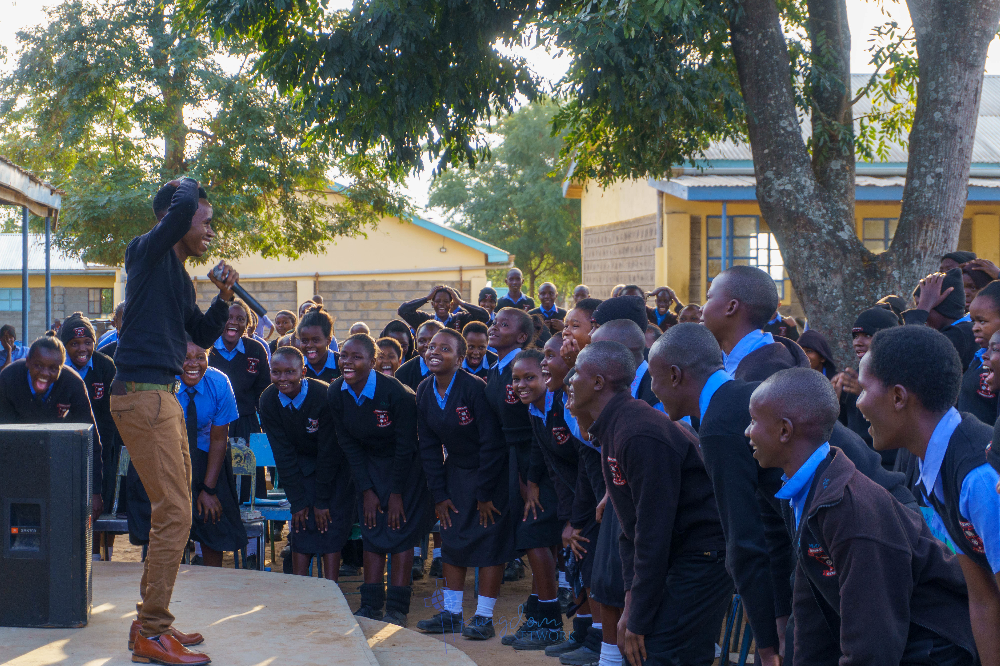

Our Departments

Missions
Extending the Kingdom through outreach, evangelism, and community impact.

Media
Communicating revelation and testimony through digital platforms and creative expression.

Praise & Worship
Leading the ministry into tangible experiences of God’s presence through worship.

Set & Sound
Supporting excellence in worship and ministry atmosphere through technical service.

Mentorship School
Building spiritual stamina through intentional teaching, discipleship, and mentorship.